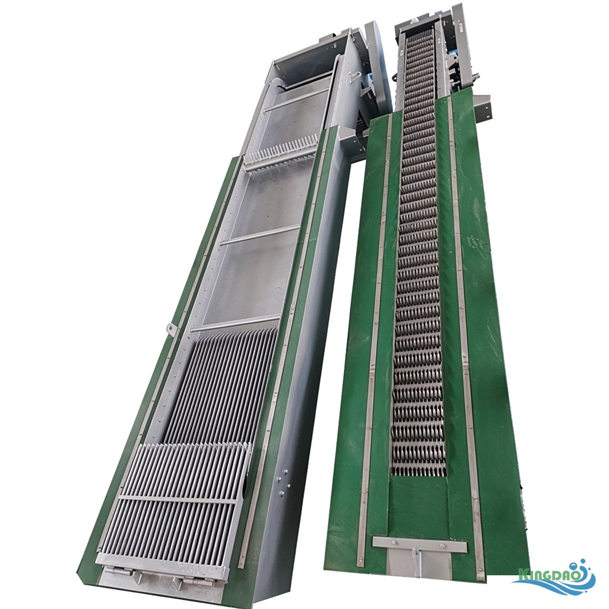

A coarse bar screen is the simplest and often the most robust pre-treatment step: a rack of bars at a wide spacing that stops the material which would damage pumps, with manual or semi-manual raking.
It is the right choice for small stations, storm overflows, and installations where the screenings volume is low enough that automation would cost more than it saves. It also serves as a bypass-stage screen ahead of finer equipment.
Mechanically raked or grab cleaned, depending on channel depth and how often the station is attended.


Small stations · storm overflow · bypass screening
Flow, the medium, the installation and the discharge requirement — that is enough to select and quote.